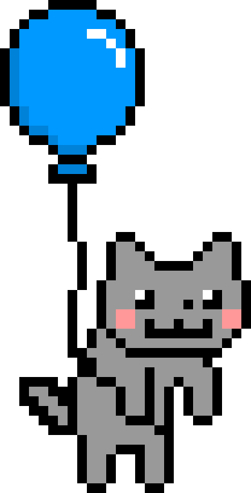

Mata Kuliah di IF
Semangat yaa buat ngebantai mata kuliah di semester selanjutnya!
- Basis Data (3 SKS) - Fokus pada SQL & desain database
- Pemrograman Web Lanjut (4 SKS) - Belajar framework modern
- Struktur Data & Algoritma (3 SKS) - Penting untuk logika pemrograman
- Jaringan Komputer (3 SKS) - Memahami dasar-dasar networking
- Etika Profesi (2 SKS) - Pembentukan karakter profesional
Bismillah bisa lewatin semua dan lancar selalu, aamiin!
